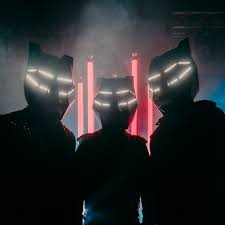

A lo largo de los años, el grupo canadiense Black Tiger Sex Machine se ha consolidado como figuras clave en la
escena del bass. Junto con su música, BTSM traspasa los límites de lo que puede ser un espectáculo en vivo, implementando
una experiencia extremadamente inmersiva donde las imágenes, las luces, la música y sus característicos cascos Tiger se controlan en vivo.
Su enfoque de base ha fomentado una base de fans extraordinariamente fiel llamada Iglesia BTSM.